iSEE therefore I explore (better)
iSEE Workshop - EuroBioc2025
Federico Marini1, Najla Abassi2, Kevin Rue-Albrecht3, Charlotte Soneson4, Aaron Lun5
Source:vignettes/Introduction_to_iSEEWorkshopEuroBioc2025.Rmd
Introduction_to_iSEEWorkshopEuroBioc2025.RmdAbout this workshop
iSEE (Interactive SummarizedExperiment Explorer) is a Bioconductor
software package (Rue-Albrecht et al.
2018) that provides a powerful and extendable multi-purpose
visual interface for exploring data stored in a SummarizedExperiment
object, using the R/shiny framework.
Given the widespread adoption of SummarizedExperiment and its
derivatives (SingleCellExperiment, SpatialExperiment, …) throughout the
Bioconductor ecosystem and the smooth interoperability from other main
frameworks (Seurat, Scanpy/AnnData), this package can be a ubiquitous
companion across all the main steps of efficient analysis workflows,
from the initial quality control all the way down to deploying data to
accompany publications.
In this workshop, we will provide an overview of its main
functionality, displaying how the most common tasks in data exploration
and interpretation can be achieved within this package, which delivers
an efficient combination of interactivity and reproducibility.
Attendees will be able to learn hands-on through a rich vignette that
composes a masterclass-like full course on iSEE and its related packages
(iSEEu, iSEEde, iSEEpathways, iSEEindex, and more). We aim to empower
users in a “from zero to hero” format to explore in depth a wide
spectrum of datasets, providing a free, natural, efficient, and
customizable solution to achieve this within the Bioconductor project,
and ultimately extract valuable insight from omics datasets in
interdisciplinary settings.
Installing and loading the required packages
To run the content presented in this demo, make sure to first run this following chunk in your R session. This will install the workshop package as well as all required dependencies.
install.packages("BiocManager")
BiocManager::install("iSEE/iSEEWorkshopEuroBioc2025",
dependencies = TRUE,
build_vignettes = TRUE)Let’s start!
This command will load all required dependencies and set you up for the upcoming session!
Given the very interactive and hands-on nature of this workshop, most
of its execution will be guided during the live presentation.
This vignette is intended as a fille rouge through it, with constant
reminders that there’s the iUSEiSEE package, which is possibly the most
comprehensive collection of resources on how to use iSEE, from beginner
level, all the way to its pro-like features (and extensions!).
The packages that will be used in this workshop are essentially listed below:
Got data?
Most of the functionality covered in this workshop will be illustrated by means of a single-cell RNA sequencing dataset that is included in the package. You can load the dataset as follows:
sce <- readRDS(
file = system.file("datasets", "sce_pbmc3k.RDS", package = "iSEEWorkshopEuroBioc2025")
)
sce
#> class: SingleCellExperiment
#> dim: 32738 2643
#> metadata(0):
#> assays(2): counts logcounts
#> rownames(32738): MIR1302-10 FAM138A ... AC002321.2 AC002321.1
#> rowData names(19): ENSEMBL_ID Symbol_TENx ... FDR_cluster11
#> FDR_cluster12
#> colnames(2643): Cell1 Cell2 ... Cell2699 Cell2700
#> colData names(24): Sample Barcode ... labels_ont cell_ontology_labels
#> reducedDimNames(3): PCA TSNE UMAP
#> mainExpName: NULL
#> altExpNames(0):This dataset has already been processed following established principles for single-cell analysis with Bioconductor. To see how the processing was done, consult the script provided with the workflow package.
Specifically, this object contains some of the “classical” relevant
sample metadata in its colData slot, covering both
categorical (cell type, cluster labels) and numerical (stemming from QC
steps):
colData(sce)
#> DataFrame with 2643 rows and 24 columns
#> Sample Barcode Sequence Library
#> <character> <character> <character> <integer>
#> Cell1 pbmc3k AAACATACAACCAC-1 AAACATACAACCAC 1
#> Cell2 pbmc3k AAACATTGAGCTAC-1 AAACATTGAGCTAC 1
#> Cell3 pbmc3k AAACATTGATCAGC-1 AAACATTGATCAGC 1
#> Cell4 pbmc3k AAACCGTGCTTCCG-1 AAACCGTGCTTCCG 1
#> Cell5 pbmc3k AAACCGTGTATGCG-1 AAACCGTGTATGCG 1
#> ... ... ... ... ...
#> Cell2696 pbmc3k TTTCGAACTCTCAT-1 TTTCGAACTCTCAT 1
#> Cell2697 pbmc3k TTTCTACTGAGGCA-1 TTTCTACTGAGGCA 1
#> Cell2698 pbmc3k TTTCTACTTCCTCG-1 TTTCTACTTCCTCG 1
#> Cell2699 pbmc3k TTTGCATGAGAGGC-1 TTTGCATGAGAGGC 1
#> Cell2700 pbmc3k TTTGCATGCCTCAC-1 TTTGCATGCCTCAC 1
#> Cell_ranger_version Tissue_status Barcode_type Chemistry
#> <character> <character> <character> <character>
#> Cell1 v1.1.0 NA GemCode Chromium_v1
#> Cell2 v1.1.0 NA GemCode Chromium_v1
#> Cell3 v1.1.0 NA GemCode Chromium_v1
#> Cell4 v1.1.0 NA GemCode Chromium_v1
#> Cell5 v1.1.0 NA GemCode Chromium_v1
#> ... ... ... ... ...
#> Cell2696 v1.1.0 NA GemCode Chromium_v1
#> Cell2697 v1.1.0 NA GemCode Chromium_v1
#> Cell2698 v1.1.0 NA GemCode Chromium_v1
#> Cell2699 v1.1.0 NA GemCode Chromium_v1
#> Cell2700 v1.1.0 NA GemCode Chromium_v1
#> Sequence_platform Individual Date_published sum detected
#> <character> <character> <character> <numeric> <integer>
#> Cell1 NextSeq500 HealthyDonor2 2016-05-26 2421 781
#> Cell2 NextSeq500 HealthyDonor2 2016-05-26 4903 1352
#> Cell3 NextSeq500 HealthyDonor2 2016-05-26 3149 1131
#> Cell4 NextSeq500 HealthyDonor2 2016-05-26 2639 960
#> Cell5 NextSeq500 HealthyDonor2 2016-05-26 981 522
#> ... ... ... ... ... ...
#> Cell2696 NextSeq500 HealthyDonor2 2016-05-26 3461 1155
#> Cell2697 NextSeq500 HealthyDonor2 2016-05-26 3447 1227
#> Cell2698 NextSeq500 HealthyDonor2 2016-05-26 1684 622
#> Cell2699 NextSeq500 HealthyDonor2 2016-05-26 1024 454
#> Cell2700 NextSeq500 HealthyDonor2 2016-05-26 1985 724
#> subsets_MT_sum subsets_MT_detected subsets_MT_percent total
#> <numeric> <integer> <numeric> <numeric>
#> Cell1 73 10 3.015283 2421
#> Cell2 186 10 3.793596 4903
#> Cell3 28 8 0.889171 3149
#> Cell4 46 10 1.743085 2639
#> Cell5 12 5 1.223242 981
#> ... ... ... ... ...
#> Cell2696 73 7 2.109217 3461
#> Cell2697 32 8 0.928343 3447
#> Cell2698 37 7 2.197150 1684
#> Cell2699 21 7 2.050781 1024
#> Cell2700 16 6 0.806045 1985
#> log10_total sizeFactor Cluster labels_main labels_fine
#> <numeric> <numeric> <factor> <character> <character>
#> Cell1 3.38399 0.849265 8 CD8+ T cells Central memory CD8 T..
#> Cell2 3.69046 1.824464 1 B cells Non-switched memory ..
#> Cell3 3.49817 1.584034 4 CD4+ T cells Follicular helper T ..
#> Cell4 3.42144 1.223430 10 Monocytes Intermediate monocytes
#> Cell5 2.99167 0.484920 3 NK cells Natural killer cells
#> ... ... ... ... ... ...
#> Cell2696 3.53920 1.455151 5 Dendritic cells Myeloid dendritic ce..
#> Cell2697 3.53744 1.695007 1 B cells Plasmablasts
#> Cell2698 3.22634 0.592496 1 B cells Naive B cells
#> Cell2699 3.01030 0.452193 1 B cells Naive B cells
#> Cell2700 3.29776 0.792952 8 CD4+ T cells Naive CD4 T cells
#> labels_ont cell_ontology_labels
#> <character> <character>
#> Cell1 CL:0000913 effector memory CD8-..
#> Cell2 CL:0000970 unswitched memory B ..
#> Cell3 CL:0002038 T follicular helper ..
#> Cell4 CL:0002393 intermediate monocyte
#> Cell5 CL:0000623 natural killer cell
#> ... ... ...
#> Cell2696 CL:0000782 myeloid dendritic cell
#> Cell2697 CL:0000980 plasmablast
#> Cell2698 CL:0000788 naive B cell
#> Cell2699 CL:0000788 naive B cell
#> Cell2700 CL:0000895 naive thymus-derived..Wait, what if I have a Seurat object or I did work with Scanpy?
No problem, you are just one conversion step away from using iSEE, pinky swear.
The create_datasets.Rmd
notebook has a section that covers exactly that - or you might already
be familiar with zellkonverter (https://bioconductor.org/packages/zellkonverter/) and/or
anndataR (https://anndatar.data-intuitive.com/).
A quick poll
What type of plots do you commonly generate for your (single-cell) expression data?
Do you commonly present a collection of plots within a group meeting/a meeting with your collaborators?
How many iterations do you need till you reach its final version?
Breaking things down a bit, good chances are there that you can (re)produce these plots within iSEE!
Everybody likes vanilla ice
… so you might already like vanilla iSEE!
You’ll start the iSEE app by simply typing
iSEE(sce)Yep, that’s really just that!
All you need is a SummarizedExperiment, or anything built on top of that: SingleCellExperiment, SpatialExperiment, DeeDeeExperiment, DESeqDataset, … just to name a few.
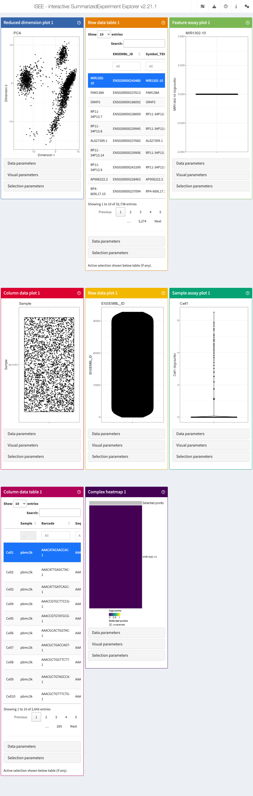
Actually, you could even start iSEE without any
dataset, and upload that at runtime.
You could do so by typing
iSEE()This can be relevant if you intend to deploy iSEE in some kind of server-like mode (e.g. serving the dataset(s) of your research group, or hosting iSEE for anyone to upload their own SummarizedExperiment objects, provided as .rds files).
The panel types
There are 8 essential panel types by default within iSEE:
- The reduced dimension plot can display any reduced
dimension representation that is present in the
reducedDimslot of theSingleCellExperimentobject. - The column data plot can display one or two of the
provided column annotations (from the
colDataslot). - The row data plot displays one or two of the
provided row annotations (from the
rowDataslot). - The complex heatmap panel displays, for any assay, the observed values for a subset of the features across the samples.
- The feature assay plot displays the observed values for one feature across the samples. It is also possible to plot the observed values for two features, in a scatter plot.
- The sample assay plot shows the observed values for all features, for one of the samples. It is also possible to plot the observed values for two samples, in a scatter plot.
- The row data table displays all information
provided in the
rowDataslot of theSummarizedExperimentobject, leveraging the interactivity provided by the DT package. - The column data table displays all information
provided in the
colDataslot of theSummarizedExperimentobject.
These panels can communicate among each other and they are much more powerful than the individual representation they carry, as this allows you to really dig deeper into your data!
The panel options
Each of the panels available within iSEE have three dedicated sets of controls, and we will look at them in detail. We have Data parameters, Visual parameters, and Selection parameters.
Once we have seen these groups of parameters, let’s think of what you can use them for!
Data parameters
Each plot panel type has a Data parameters collapsible
box. This box has different content for each panel type, but in all
cases it lets the user control the data that is displayed in the
plot.
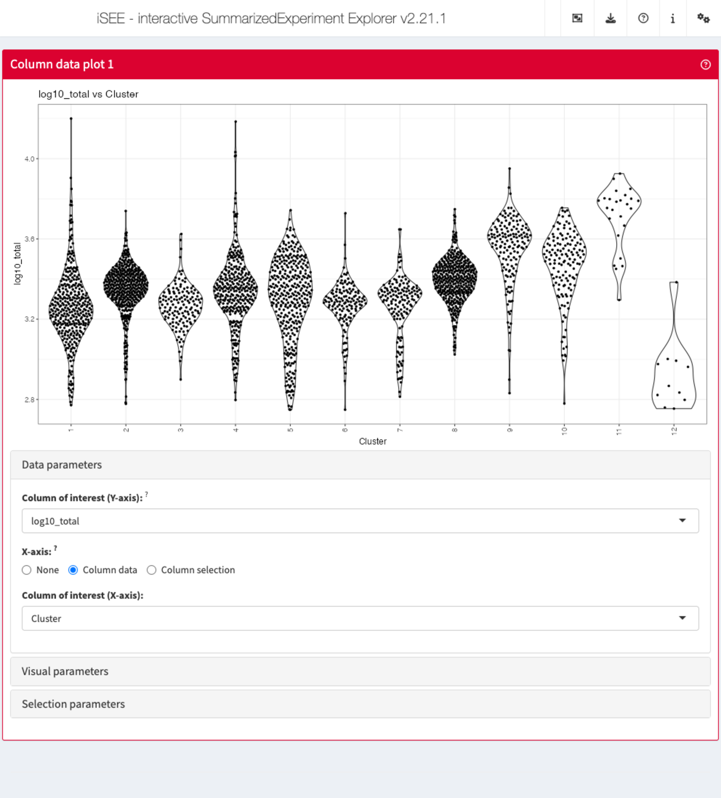
Visual parameters
In contrast to the Data parameters collapsible box that
lets users control what is displayed in the plot, the
Visual parameters box lets users control how the
information is displayed.
This collapsible box contains the controls to change the size, shape, opacity, and color of the points, to facet the plot by any available categorical annotation, to subsample points for increased speed of plot rendering, and to control how legends are displayed.
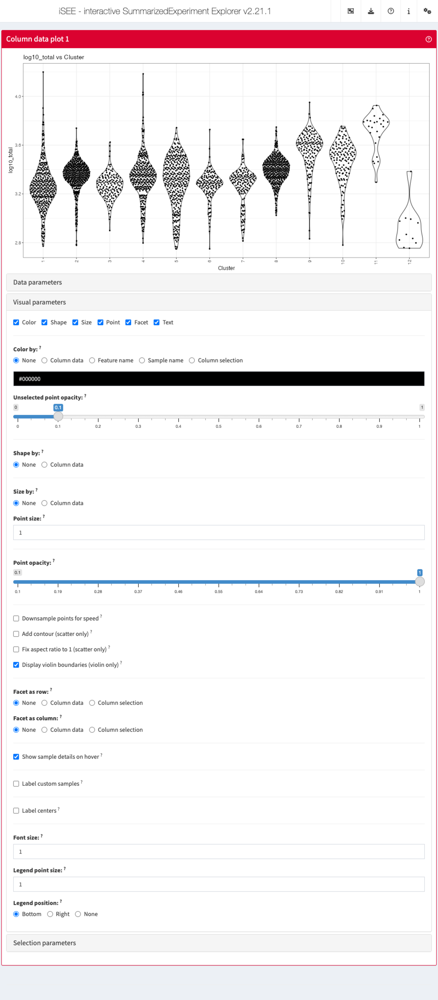
Additional controls
At the top-right corner of the iSEE application, users can find additional controls for reproducibility, configuration, and help.
| Organization | 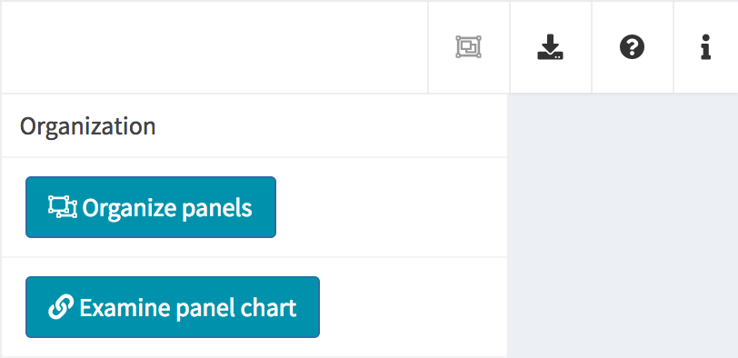 |
Organize panels Examine panel chart |
| Export | 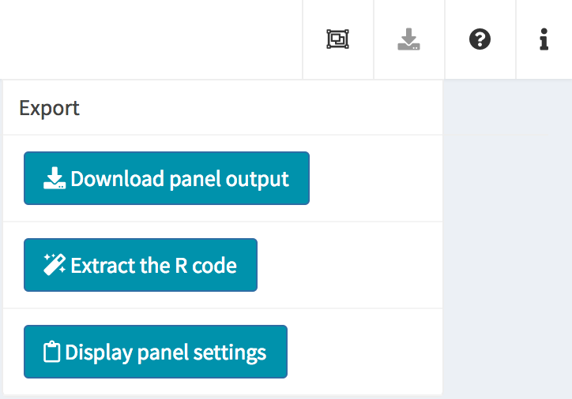 |
Download panel output Extract R code Display panel settings |
| Documentation | 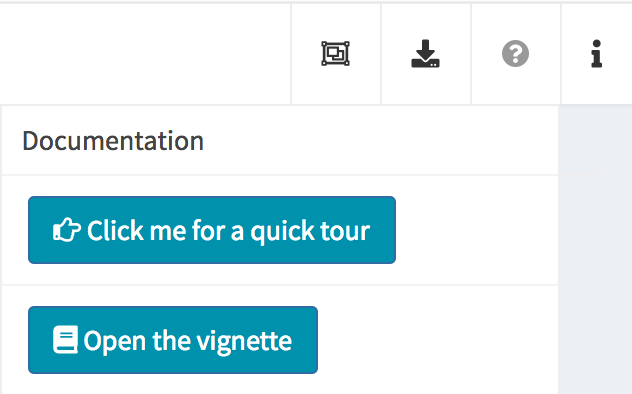 |
Quick tour Open the vignette |
| Additional info | 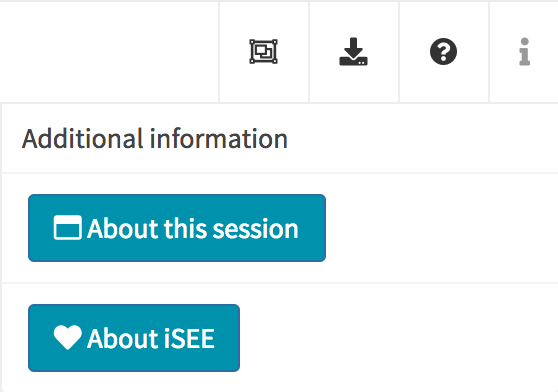 |
About this session About iSEE |
Organize panels
As mentioned above, the default behaviour of the iSEE()
function is to launch an instance of the user interface that displays
one panel of each of the standard types (provided the underlying data is
available, e.g. for reduced dimension plots the reducedDim
slot is required). However, in some cases it is desirable to have
multiple panels of the same type, and/or exclude some panel types.
In order to accommodate such situations, users can add, remove,
change the order of and resize all panels via the
Organization menu in the top-right corner.
Clicking in the selectize box listing all current panels will present you with a drop-down menu from which you can choose additional panels to add. Similarly, panels can be removed by clicking on the icon associated with the panel name.
Each panel can be individually resized by changing the width and height. Note that the total width of a row in the interface is 12 units. When the width of a panel is greater than the space available, the panel is moved to a new row.
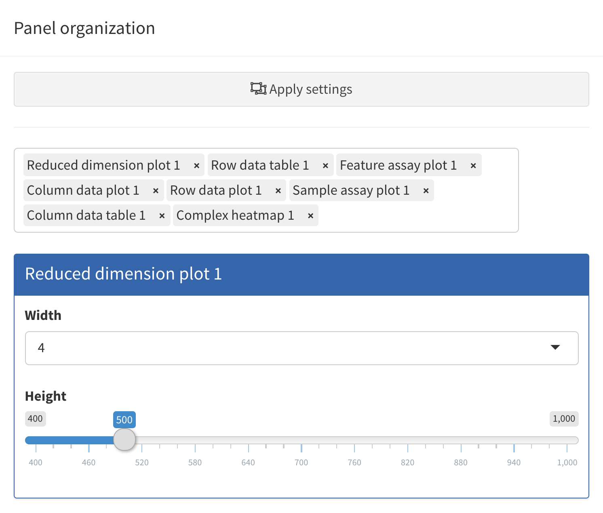
Linking panels and transmitting point selections
When exploring data, it is often useful to be able to select a subset of points and investigate different aspects of their characteristic features. In iSEE, this can be achieved by selecting points in one panel, and transmitting this selection to one or more other panels.
The brushing and point selection can also be programmatically preconfigured.
The button Examine panel chart display a graph that
reports any active point transmission between panels in the app.
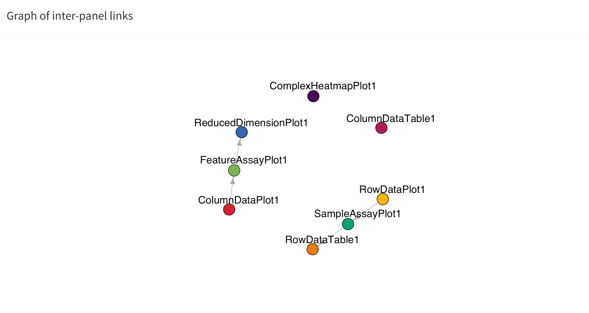
Download panel output
The Download panel output button opens a modal window
listing all the current panels in the app. Checkboxes allow users to
select any subset of panels to export. Finally, clicking the
Download button in that modal will prompt the app to save
plots to PDF files, tables to CSV files, and package the set of files in
a ZIP archive that users can download and save on their computer.
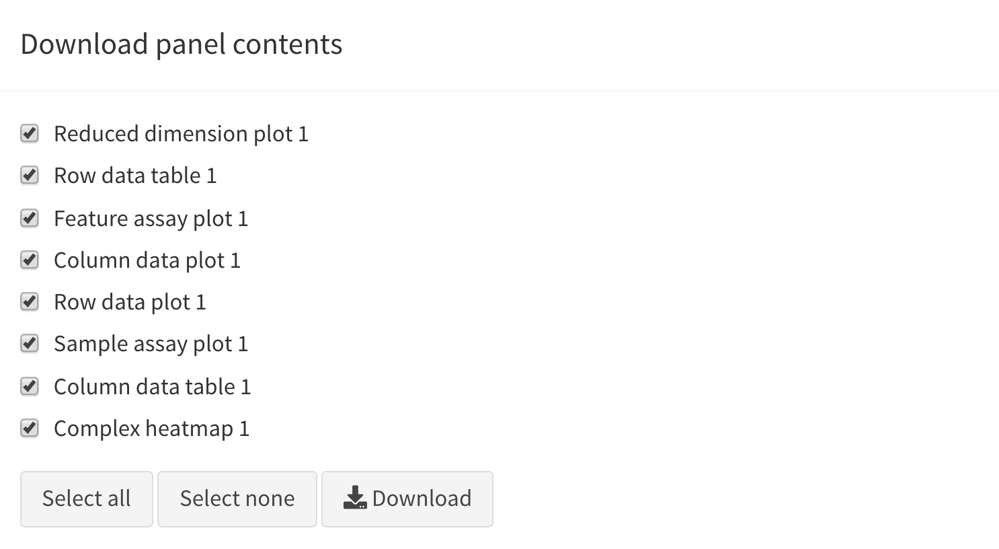
Extract R code
The fact that data exploration is done interactively is no reason to forego reproducibility! To this end, iSEE lets you export the exact R code used to create each of the currently visible plots.
Importantly, the script reported by iSEE contains a short preamble needed to set up variable names that are used in individual panels, including active brushes used to transfer point selections.
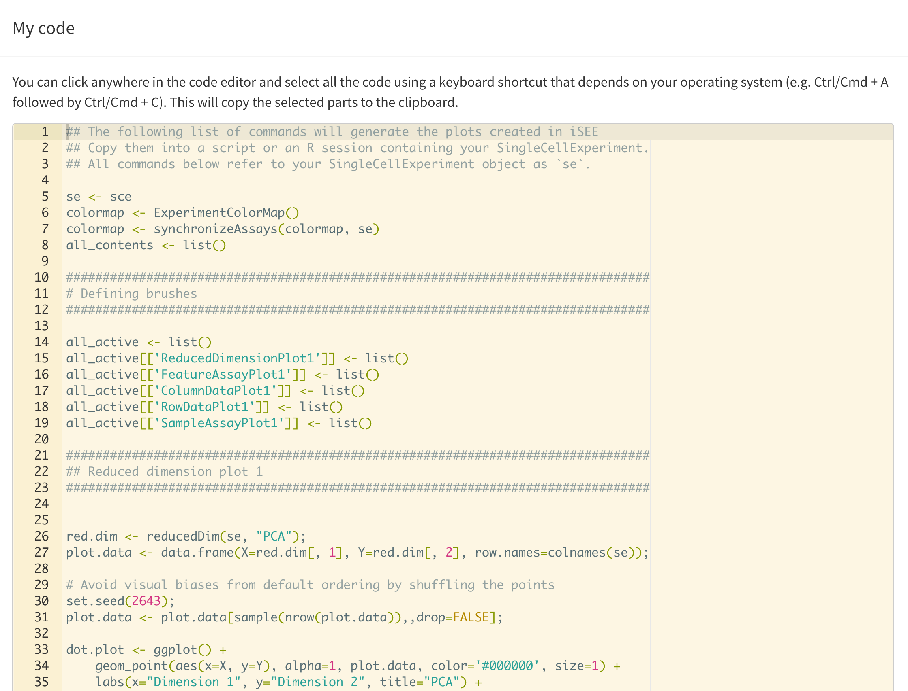
Display panel settings
It can take a great amount of time to achieve a satisfactory panel configuration. To avoid the need to manually organize the panels each time the app is opened, iSEE offers the possibility to export code that can be reused later to programmatically specify how the app is initialized, as well as to inspect and export the current panel settings for future use.
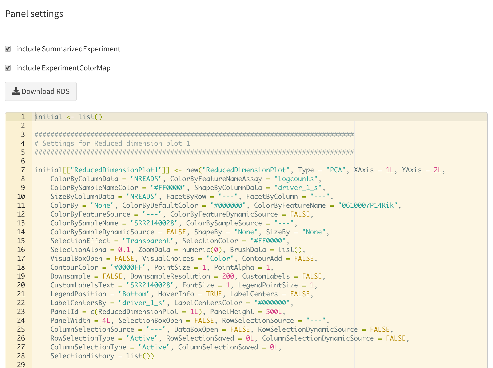
Quick tour
One important aspect of visualization is the ability to share your
insights with others. A powerful way of easily getting people unfamiliar
with your data up to speed is to provide a walkthrough of the interface
and the different types of plots that are displayed. With iSEE, this
can be achieved using tours. To configure a tour, you need to
create a text file with two columns; named element and
intro, with the former describing the UI element to
highlight in each step, and the latter providing the descriptive text
that will be displayed.
Clicking the Quick tour button launches an interactive
tour of the interface using the rintrojs
package, highlighting specific elements of the user interface, labeled
with information and instructions guiding users through panels and tasks
specific to individual apps.
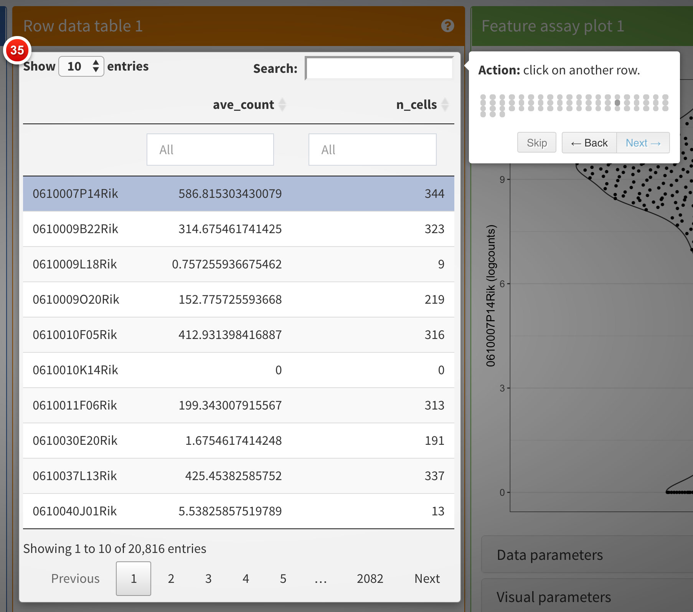
You can see a live example of a more complex tour in action in the deployed apps exemplified on the iSEE website, for example https://hbcc-nimh.shinyapps.io/shinyApp_JNS2023/.
When configured in an efficient manner, you can consider the tour as a live version of the legend of your figures!
Open the vignette
The user interface navigation bar also includes this button to open the introductory vignette to iSEE in your we browser.
Depending on the version of iSEE that you are using, this will adaptively lead you to a locally built vignette present on your computer, or the release or the devel version of the Bioconductor package landing page, e.g. <Bioconductor 3.22>.
Session information
This button displays the output of sessionInfo(), which
is a useful piece of information to report when reporting an issue with
an app.
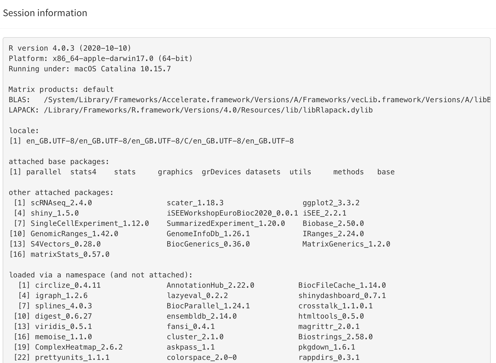
About iSEE
This button provides information about the authors of iSEE, as well as citation information.
If you use this package, please use the following citation information:
Rue-Albrecht K, Marini F, Soneson C, Lun ATL (2018). “iSEE: Interactive SummarizedExperiment Explorer.” F1000Research, 7, 741. doi: 10.12688/f1000research.14966.1 (URL: https://doi.org/10.12688/f1000research.14966.1).
A BibTeX entry for LaTeX users is:
@Article{,
title = {iSEE: Interactive SummarizedExperiment Explorer},
author = {Kevin Rue-Albrecht and Federico Marini and Charlotte Soneson and Aaron T. L. Lun},
publisher = {F1000 Research, Ltd.},
journal = {F1000Research},
year = {2018},
month = {Jun},
volume = {7},
pages = {741},
doi = {10.12688/f1000research.14966.1},
}iSEE 101 - What can you do with it?
In this section, we list a number of actions you can perform with the
help of iSEE. Feel free to try them out already! The
iUSEiSEE vignettes will go into more details for many of
them, but this can be an excellent starter to gain experience and get
quickly familiar with iSEE.
- Organize the iSEE panels:
- Search for the
Organize panelsbutton. - Try to add and remove panels, and resize and reorder the existing ones.
- Remember to click on
Apply settingsafterwards.
- Search for the
- Multiple panels of the same type:
- Show two Reduced dimension plot panels; one showing the PCA representation, one showing the t-SNE representation.
- Link them together, so that points that are selected in one are highlighted in the other.
- More on
iSEElinks and transmissions:- Start an instance with the default set of panels and explore the different types of plots generated by the Feature assay plot panel using the choices available for the two axes.
- Select a set of points in one of the Feature assay plot panels, by drawing a rectangle around them.
- Then open the Selection parameters collapsible box of another Feature assay plot panel, and select the Feature assay plot panel where you made the point selection from the dropdown menu under Receive column selection from.
- Note how the points corresponding to the cells that you selected in the first panel are highlighted in the receiving panel.
- You can highlight the points in different ways by changing the Selection effect.
-
iSEEcan display active links transmitting point selections between panel using the “Examine panel chart” menu.
- Color the points:
- Open the
Visual parameterscollapsible box in one of the Reduced dimension plot panels, and setColor by:toColumn data. - Color the cells by
Cluster, which contains the cluster labels that were assigned to the cells in the preprocessing step. - Color the cells by the log10-transformed number of detected genes
(
log10_total). - Set
Color by:toFeature namein one of the Reduced dimension plot panels, and select one of the genes from the dropdown menu. You can search for a gene of interest by typing in the dropdown box.
- Open the
- Highlight & zoom:
- Set
Color by:toSample namein one of the Reduced dimension plots, and use the dropdown menu underneath to change the highlighted cell. - Reduce the point size and increase the transparency (i.e. reduce the value for the alpha attribute).
- Apply a downsampling grid of 100 horizontal and vertical bins.
- As above, select a region in the first panel and transmit the selection to the second one.
- Double-click on the area selected in the first panel to zoom and display the same view as the second panel.
- Double click again anywhere in the panel to zoom out.
- Set
- Launch iSEE with pre-specified configurations:
- Start
iSEEin the default configuration. - Click on the export icon () in the top-right corner, and select ‘Display panel settings’.
- Copy all the code shown in the pop-up window.
- Close the app and paste this code in your R session.
- This defines the ‘initial’ list. Then launch a new instance adding
initial = initialto theiSEEcall. - Note how the app starts in the same configuration as it was before closing. Of course, it is still possible to continue exploring the data interactively - we have only changed the starting configuration.
- Start
iSEEwith one Column data plot and one Row data plot panel. - Start
iSEEin an empty configuration.
- Start
- Export code
- Click on the export icon () in the top-right corner, and select ‘Extract the R code’.
- Copy the preamble and the code for the first plot from the pop-up window. Close the app and paste the code in your R session.
- Note how this recreates the first plot from the app.
iSEEu: Introducing modes and some additional panels
The iSEEu (“iSEE universe”) Bioconductor package defines additional custom panels and predefined ‘modes’ (startup configurations) that may be useful for specific applications. Here we illustrate the use of the reduced dimension mode, which will start an application with one reduced dimension panel for each reduced dimension representation in the input object.
library("iSEEu")
app <- modeReducedDim(sce)
shiny::runApp(app)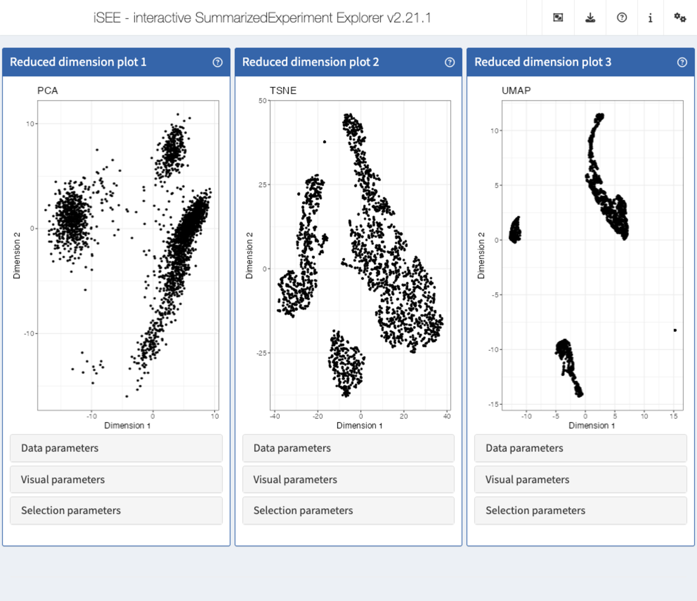
Furthermore, since iSEE version 2.0.0, users can leverage the implementation of panels as a hierarchy of S4 classes to rapidly extend the framework and develop new types of panels with virtually unlimited freedom of functionality.
For example, the Hexagonal reduced dimension plot - implemented in the iSEEhex package - demonstrates an alternative to the downsampling strategy, by summarizing data points into hexagonal bins.
library("iSEEhex")
app <- iSEE(sce, initial = list(
ReducedDimensionPlot(PanelWidth = 6L),
ReducedDimensionHexPlot(PanelWidth = 6L)
))
shiny::runApp(app)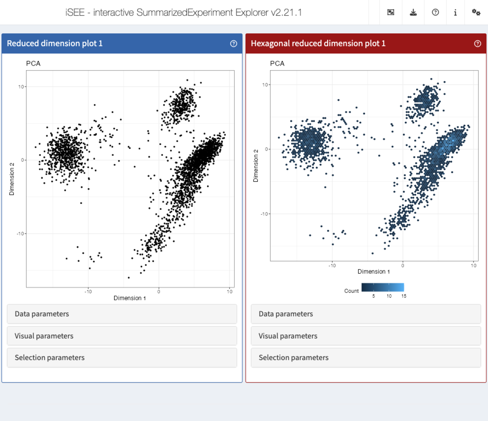
Another useful mode you can use with your data, for example if using
iSEE for mass cytometry data, would be the modeGating. This
launches an app preconfigured with multiple chain-linked feature
expression plots for interactive data exploration.
# Select top variable genes ----
plot_count <- 6
rv <- rowVars(assay(sce, "logcounts"))
top_var <- head(order(rv, decreasing=TRUE), plot_count*2)
top_var_genes <- rownames(sce)[top_var]
plot_features <- data.frame(
x = head(top_var_genes, plot_count),
y = tail(top_var_genes, plot_count),
stringsAsFactors = FALSE
)
# launch the app itself ----
app <- modeGating(sce,
plotAssay = "logcounts",
features = plot_features)
shiny::runApp(app)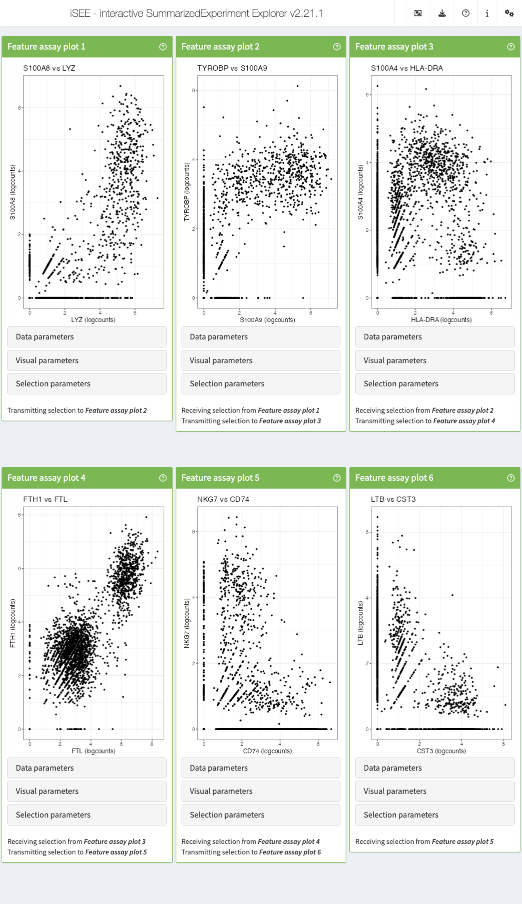
iSEEu also
has a set of extra panels that can come in handy in different
situations. For example, iSEEu::AggregatedDotPlot
implements an aggregated dot plot where each feature/group combination
is represented by a dot. The color of the dot scales with the mean assay
value across all samples for a given group, while the size of the dot
scales with the proportion of non-zero values across samples in that
group. This can be an alternative to a heatmap, and an example can be
seen in the chunks below:
app <- iSEE(
sce,
initial = list(
AggregatedDotPlot(
Assay = "logcounts",
ColumnDataLabel = "labels_main",
CustomRowsText = top_var_genes
)
)
)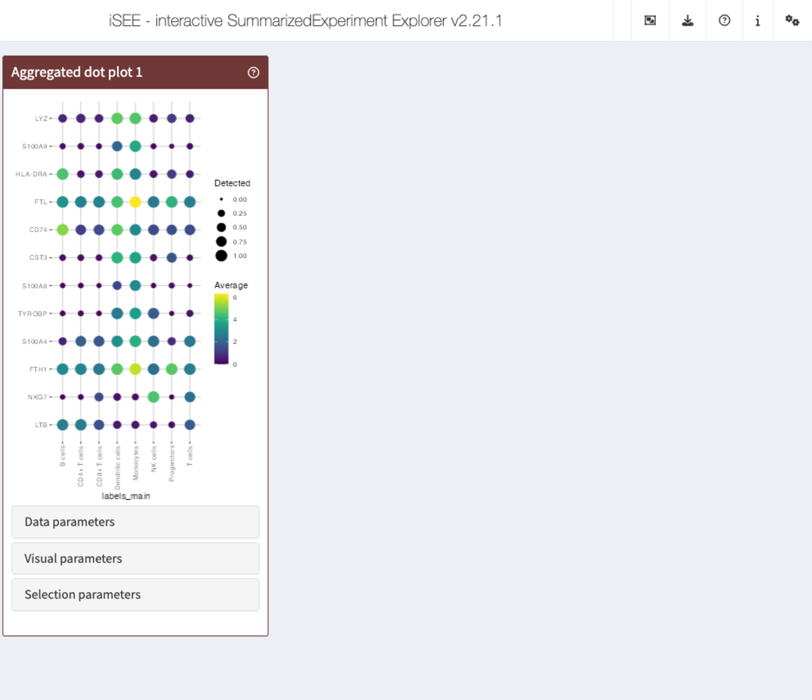
An overview of other extension packages and the panels they provide can be found on the iSEE website: https://isee.github.io/panels.html.
iSEEfier: starting to use iSEE just became even faster!
Let’s say we are interested in visualizing the expression of a list
of specific marker genes in one view, or maybe we created different
initial states separately, but would like to visualize them in the same
instance. As we previously learned, we can do a lot of these tasks by
launching the default interface with iSEE(sce), and
adding/removing panels as desired. This can involve multiple manual
steps (selecting the gene of interest, color by a specific
colData column, …), or the execution of multiple lines of
setup code. The iSEEfier
package streamlines the process of starting (or if you will, firing up)
an iSEE instance with a small chunk of code, avoiding the
tedious way of setting up every iSEE panel
individually.
In this section, we will illustrate a simple example of how to use
iSEEfier.
We will use the same pbmc3k data we worked with during this
workshop.
We start by loading the iSEEfier package:
library("iSEEfier")
# import data
sce <- readRDS(
file = system.file("datasets", "sce_pbmc3k.RDS", package = "iSEEWorkshopEuroBioc2025")
)
sce
#> class: SingleCellExperiment
#> dim: 32738 2643
#> metadata(0):
#> assays(2): counts logcounts
#> rownames(32738): MIR1302-10 FAM138A ... AC002321.2 AC002321.1
#> rowData names(19): ENSEMBL_ID Symbol_TENx ... FDR_cluster11
#> FDR_cluster12
#> colnames(2643): Cell1 Cell2 ... Cell2699 Cell2700
#> colData names(24): Sample Barcode ... labels_ont cell_ontology_labels
#> reducedDimNames(3): PCA TSNE UMAP
#> mainExpName: NULL
#> altExpNames(0):For example, we can be interested in visualizing the expression of GZMB, TGFB, and CD28 genes all at once. We start by providing a couple of parameters:
# define the list of genes
feature_list_1 <- c("GZMB", "TGFB1", "CD28")
# define the cluster/cell type
cluster_1 <- "labels_main"Now we can pass these parameters into iSEEinit() to
create a customized initial configuration:
# create an initial state with iSEEinit
initial_1 <- iSEEinit(sce,
features = feature_list_1,
clusters = cluster_1,
add_markdown_panel = TRUE)We can then pass the generated initial_1 list as the
initial argument in the iSEE() call:
app <- iSEE(sce, initial = initial_1)This is how it would look like:
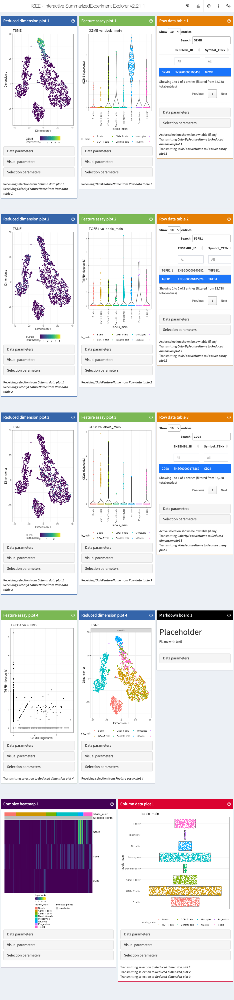
While we are visualizing the expression of these genes, we might want
to take some notes (gene X is more expressed in a certain cell
type/cluster than some others, maybe we are trying to annotate the cells
ourselves if the annotation wasn’t available…).
For this, we used the argument add_markdown_panel = TRUE.
It will display a MarkdownBoard panel where we can note our
observations without leaving the app.
We can check the initial’s content, or how the included panels are
linked between each other without running the app with
view_initial_tiles() and
view_initial_network():
# display a graphical representation of the initial configuration,
# where the panels are identified by their corresponding colors
view_initial_tiles(initial = initial_1)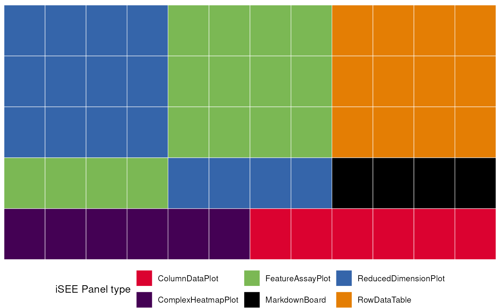
# display a network visualization for the panels
view_initial_network(initial_1, plot_format = "igraph")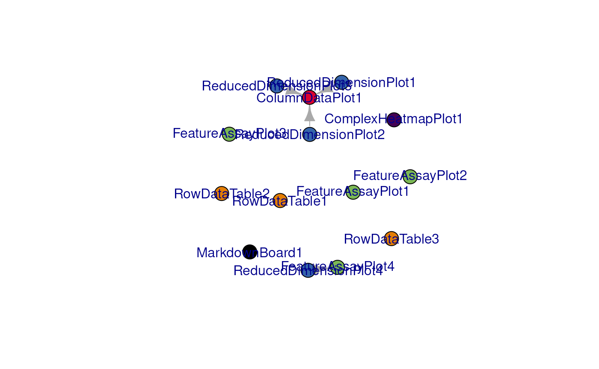
#> IGRAPH 91d2bfb DN-- 14 4 --
#> + attr: name (v/c), color (v/c)
#> + edges from 91d2bfb (vertex names):
#> [1] ReducedDimensionPlot1->ColumnDataPlot1
#> [2] ReducedDimensionPlot2->ColumnDataPlot1
#> [3] ReducedDimensionPlot3->ColumnDataPlot1
#> [4] ReducedDimensionPlot4->FeatureAssayPlot4Another alternative for network visualization would use the
interactive widget provided by visNetwork:
view_initial_network(initial_1, plot_format = "visNetwork")
#> IGRAPH abcef99 DN-- 14 4 --
#> + attr: name (v/c), color (v/c)
#> + edges from abcef99 (vertex names):
#> [1] ReducedDimensionPlot1->ColumnDataPlot1
#> [2] ReducedDimensionPlot2->ColumnDataPlot1
#> [3] ReducedDimensionPlot3->ColumnDataPlot1
#> [4] ReducedDimensionPlot4->FeatureAssayPlot4It is also possible to use iSEEfier to combine multiple initial configurations into one:
# create a second initial configuration
feature_list_2 <- c("CD74", "CD79B")
initial_2 <- iSEEinit(sce,
features = feature_list_2,
clusters = cluster_1)
# merge with the previous one
merged_config <- glue_initials(initial_1, initial_2)
#> Merging together 2 `initial` configuration objects...
#> Combining sets of 14, 10 different panels.
#>
#> Dropping 1 of the original list of 24 (detected as duplicated entries)
#>
#> Some names of the panels were specified by the same name, but this situation can be handled at runtime by iSEE
#> (This is just a non-critical message)
#>
#> Returning an `initial` configuration including 23 different panels. Enjoy!
#> If you want to obtain a preview of the panels configuration, you can call `view_initial_tiles()` on the output of this function
# check out the content of merged_config
view_initial_tiles(initial = merged_config)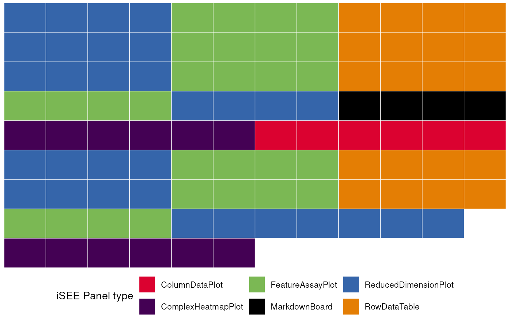
?iSEEfier is always your friend whenever you need
further documentation on the package/a certain function and how to use
it.
iSEE more than one dataset!
iSEEhub: iSEEing the ExperimentHub datasets
The iSEEhub package provides a custom landing page for an iSEE application interfacing with the Bioconductor ExperimentHub. The landing page allows users to browse the ExperimentHub, select a data set, download and cache it, and import it directly into an iSEE app.
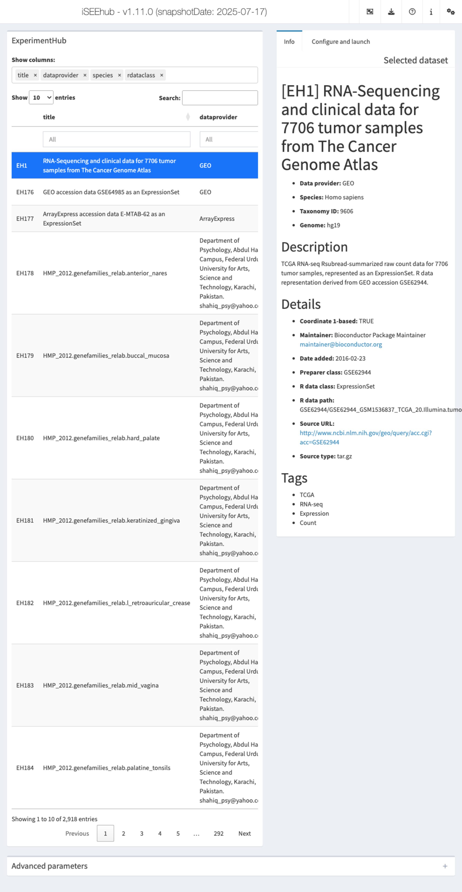
iSEEindex: one instance of iSEE to explore them
all
iSEEindex
provides an interface to any collection of data sets
within a single iSEE web-application.
The main functionality of this package is to define a custom landing
page allowing app maintainers to list a custom collection of data sets
that users can select from and directly load objects into an iSEE web
application. To see how to configure such an app, we will create a small
example:
library("iSEE")
library("iSEEindex")
bfc <- BiocFileCache(cache = tempdir())
dataset_fun <- function() {
x <- yaml::read_yaml(system.file(package = "iSEEindex", "example.yaml"))
x$datasets
}
initial_fun <- function() {
x <- yaml::read_yaml(system.file(package = "iSEEindex", "example.yaml"))
x$initial
}
app <- iSEEindex(bfc, dataset_fun, initial_fun)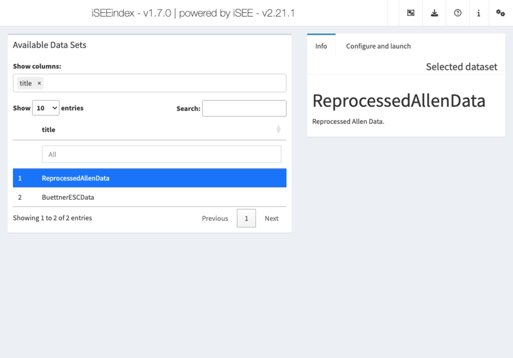
A more elaborate example (referring to the work in (Rigby et al. 2023)) is available at https://rehwinkellab.shinyapps.io/ifnresource/. The source can be found at https://github.com/kevinrue/IFNresource.
Potential use cases can include:
- An app to present and explore the different datasets in your next publication
- An app to explore collection of datasets collaboratively, in consortium-like initiatives
- An app to mirror and enhance the content of e.g. the cellxgene data portal
Good tips for some exemplary use cases
This section covers some suggestions and tips on how to use iSEE for the specific objectives mentioned in their titles.
Alle gute Dinge sind drei, so goes the adage in German. Hope the three tips for each case do help you, otherwise you can simply reach out!
“I’m still doing QC dude”
- Open up the panels either in the default mode, or just use
iSEEu::modeEmpty()to start easy - Store the configuration of the set of panels once you achieved the setup you needed
- There is literally no problem in opening multiple panels of the same type, especially if they display complementary information
“I’m exploring around the data and I am diving deep”
- It might be useful to have a look at the connections between the different panels, to keep an overview on what you are displaying, and what is linked to what
- You can always save each of the current plot as a png image - after all, it is a web application…
- You can take a snapshot of the code underlying all the outputs you are seeing at any time point, just use the magic wand!
“I have my lab meeting next week”
- There’s no need to be stingy on the panels you can show - well, the RAM of your machine might see this differently
- Choose some compelling values for the data-visual-selection
parameters, and export the
initialconfiguration so that you have it ready once the group meeting is starting, and you don’t have to blame the app for crashing - Consider saving all the output components you generated with the “Download panel output” button
“I am done with one dataset and I want to publish it”
- Come up with the best configuration of panels that tells the story right
- Put together a compelling tour to tell that story, highlighting different components of what people will see in the app once published
- Choose a nice title and have it set for the app and the tab it will be displayed into
“I even have a collection of data, is there something we can do there?”
- Collect the individual datasets as individual objects and place them possibly in the same location
- Have a look in detail at the iSEEindex way of accessing the
resources - the
iSEEindexRunrResourcemight give you just the perfect level of flexibility to read in the data any way you want within R - Write up a nice yaml entry about each dataset and each
initialconfigurations, including a tour for each
“I am just interested in looking at markers and want to make it in the most efficient manner”
- Start easy (empty) and keep adding, store the
initialconfiguration, rinse & repeat - If you are skilled, you can easily script away the
initiallist by specifying only the essential non-default arguments - Use
iSEEfier’s functionality for that -iSEEinit()andiSEEmarker()can save you a lot of time, and you can easily glue together the differentinitpieces!
“I want to generate and explore the results of pseudobulk DE analysis on single cell data. Helpz?”
- Use a framework such as
muscatto do this properly! - Take the output of the
pbDS()function and wrangle it a bit to enter its content into an object of theDeeDeeExperimentclass, which is able to elegantly store and organize your DEA (and FEA) results! - Launch iSEE on that very
DeeDeeExperimentobject - your data will be in, unaltered, and all the relevant information will be placed inside this, so that you can easily access the DE results within iSEE
Here’s a compact way of how you can do that!
Courtesy to Najla Abassi ;)
## create res, a list to hold pseudobulk DE results for all contrasts
for (i in names(contrast)) {
cat("Contrast: ", i,"\n")
res <- pbDS(pb,
design = mm,
contrast = contrast[[i]],
verbose = TRUE,
BPPARAM = BiocParallel::MulticoreParam(6))
results_list[[i]] <- res
}
## Extract one of the contrasts, for demonstration purposes
contrast_vtp_DMSO <- res$table$VTP-DMSO
## Renaming columns cleverly
for (cell in names(contrast_vtp_DMSO)) {
contrast_vtp_DMSO[[cell]] <-
contrast_vtp_DMSO[[cell]] |>
dplyr::rename(log2FoldChange = logFC,
pvalue = p_val,
padj = p_adj.loc)
rownames(contrast_vtp_DMSO[[cell]]) <- contrast_vtp_DMSO[[cell]]$gene
}
## Optional: update de + enrich list names
new_names <- c(
"NK1 A+B" = "NK1_A_B",
"NK1 C" = "NK1_C",
"NK2" = "NK2",
"NK3" = "NK3" ,
"NKint" = "NKint"
)
names(contrast_vtp_DMSO) <- new_names[names(contrast_vtp_DMSO)]
names(func_res) <- new_names[names(func_res)]
## Create the dde object
dde <- DeeDeeExperiment(sce_NKcells, # sce object
de_results = contrast_vtp_DMSO, # DEA results
enrich_results = func_res # FEA results
)
## Launch iSEE!
iSEE(dde)“I feel almighty and I want to develop a new panel type for iSEE! Where can I start?”
- Go bold! But first have a glance at the iSEE book (https://isee.github.io/iSEE-book/) to make sure you have a good understanding of how iSEE’s panels work
- Check out one of the existing custom panels that are available (e.g. within iSEEu, but not limited to that)
- Sometimes it is even easier to “re-purpose” the existing panels for your objective. For example, got spatial data? The column data panel can simply be used to display the x and y coordinates of the data at hand!
An example? See the beautiful iSEEtree extension
realized by Giulio Benedetti (Benedetti et al.
2024), which enables you to explore in depth your microbiome
data! This is now also on Bioconductor, see iSEEtree
for more.
A quick rundown on iSEE’s main parameters
… and some tips on how and when to make the most out of these, especially if you have never checked them out:
initial: Can import any specification of the initial panel setup. Be that empty, written programmatically, or simply exported from a running instance of the app. It can look like it is a mouthful of code, but it is guaranteed to work!colormap: Your best friend if you want to control how colours are handled within iSEE. You can choose custom colormaps to apply to individual assays, colData and rowData covariates. It might take a bit to get it tailored to your dataset, but it is totally worth the effort!landingPage: A powerful means to change the way of how iSEE starts and is ready to present the datasets to you.tour: Possibly the best way to tell an impactful story with your datasets. Surely an excellent way of auto-generating some embedded, live documentation that allows users to display the information while they proceed hands-on- This is based on therintrojspackageappTitleandtabTitle: These two control the title to be displayed in the app and in the browser tab - useful if you are deploying your own data and you want to control these aspects as well!voice: Yep, you can control iSEE with your voice. Nope, it is not as flexible as asking Alexa/Echo… See the dedicated vignette within the iSEE package for this!bugs: The only way so far to have bugs within iSEE :)
“I saw them use iSEE”
You’re right! There’s quite a list of apps published that directly make good use of iSEE and its functionality!
Do you want to be the next one?
Take some inspiration from…
http://shiny.imbei.uni-mainz.de:3838/iSEE_CellCousin/ (Eski et al. 2025)
https://shiny.mpl.mpg.de/wehner_lab/spinal_cord_regeneration_atlas/ (John et al. 2025)
https://rehwinkellab.shinyapps.io/ifnresource/ (Rigby et al. 2023)
your soon-to-deployed instance?
We want more!
… and we got you covered!
The iUSEiSEE repo is probably the most comprehensive set of information about iSEE and all its capabilities, and will be kept up to data as new features will come out (e.g. new extensions or panel types).
Session info
Session info
sessionInfo()
#> R version 4.5.1 (2025-06-13)
#> Platform: x86_64-pc-linux-gnu
#> Running under: Ubuntu 24.04.3 LTS
#>
#> Matrix products: default
#> BLAS: /usr/lib/x86_64-linux-gnu/openblas-pthread/libblas.so.3
#> LAPACK: /usr/lib/x86_64-linux-gnu/openblas-pthread/libopenblasp-r0.3.26.so; LAPACK version 3.12.0
#>
#> locale:
#> [1] LC_CTYPE=en_US.UTF-8 LC_NUMERIC=C
#> [3] LC_TIME=en_US.UTF-8 LC_COLLATE=en_US.UTF-8
#> [5] LC_MONETARY=en_US.UTF-8 LC_MESSAGES=en_US.UTF-8
#> [7] LC_PAPER=en_US.UTF-8 LC_NAME=C
#> [9] LC_ADDRESS=C LC_TELEPHONE=C
#> [11] LC_MEASUREMENT=en_US.UTF-8 LC_IDENTIFICATION=C
#>
#> time zone: Etc/UTC
#> tzcode source: system (glibc)
#>
#> attached base packages:
#> [1] stats4 stats graphics grDevices utils datasets methods
#> [8] base
#>
#> other attached packages:
#> [1] iSEEfier_1.5.0 iSEEindex_1.7.0
#> [3] iSEEhub_1.11.0 ExperimentHub_2.99.5
#> [5] AnnotationHub_3.99.6 BiocFileCache_2.99.6
#> [7] dbplyr_2.5.1 iSEEpathways_1.7.0
#> [9] iSEEde_1.7.0 iSEEu_1.21.0
#> [11] iSEEhex_1.11.0 TENxPBMCData_1.27.0
#> [13] HDF5Array_1.37.0 h5mread_1.1.1
#> [15] rhdf5_2.53.5 DelayedArray_0.35.3
#> [17] SparseArray_1.9.1 S4Arrays_1.9.1
#> [19] abind_1.4-8 Matrix_1.7-4
#> [21] iSEEWorkshopEuroBioc2025_1.0.0 iSEE_2.21.1
#> [23] SingleCellExperiment_1.31.1 SummarizedExperiment_1.39.2
#> [25] Biobase_2.69.1 GenomicRanges_1.61.5
#> [27] Seqinfo_0.99.2 IRanges_2.43.5
#> [29] S4Vectors_0.47.4 BiocGenerics_0.55.1
#> [31] generics_0.1.4 MatrixGenerics_1.21.0
#> [33] matrixStats_1.5.0 BiocStyle_2.37.1
#>
#> loaded via a namespace (and not attached):
#> [1] splines_4.5.1 later_1.4.4 urltools_1.7.3.1
#> [4] filelock_1.0.3 tibble_3.3.0 triebeard_0.4.1
#> [7] lifecycle_1.0.4 httr2_1.2.1 edgeR_4.7.5
#> [10] doParallel_1.0.17 lattice_0.22-7 magrittr_2.0.4
#> [13] limma_3.65.5 sass_0.4.10 rmarkdown_2.30
#> [16] jquerylib_0.1.4 yaml_2.3.10 httpuv_1.6.16
#> [19] DBI_1.2.3 RColorBrewer_1.1-3 purrr_1.1.0
#> [22] rappdirs_0.3.3 circlize_0.4.16 ggrepel_0.9.6
#> [25] irlba_2.3.5.1 pkgdown_2.1.3 codetools_0.2-20
#> [28] DT_0.34.0 scuttle_1.19.0 tidyselect_1.2.1
#> [31] shape_1.4.6.1 farver_2.1.2 ScaledMatrix_1.17.0
#> [34] viridis_0.6.5 shinyWidgets_0.9.0 jsonlite_2.0.0
#> [37] GetoptLong_1.0.5 BiocNeighbors_2.3.1 scater_1.37.0
#> [40] iterators_1.0.14 systemfonts_1.3.1 foreach_1.5.2
#> [43] tools_4.5.1 ragg_1.5.0 Rcpp_1.1.0
#> [46] glue_1.8.0 BiocBaseUtils_1.11.2 gridExtra_2.3
#> [49] xfun_0.53 mgcv_1.9-3 DESeq2_1.49.4
#> [52] dplyr_1.1.4 withr_3.0.2 shinydashboard_0.7.3
#> [55] BiocManager_1.30.26 fastmap_1.2.0 rhdf5filters_1.21.0
#> [58] shinyjs_2.1.0 digest_0.6.37 rsvd_1.0.5
#> [61] R6_2.6.1 mime_0.13 textshaping_1.0.3
#> [64] colorspace_2.1-2 listviewer_4.0.0 RSQLite_2.4.3
#> [67] paws.storage_0.9.0 hexbin_1.28.5 httr_1.4.7
#> [70] htmlwidgets_1.6.4 pkgconfig_2.0.3 gtable_0.3.6
#> [73] blob_1.2.4 ComplexHeatmap_2.25.2 S7_0.2.0
#> [76] XVector_0.49.1 htmltools_0.5.8.1 rintrojs_0.3.4
#> [79] clue_0.3-66 scales_1.4.0 png_0.1-8
#> [82] knitr_1.50 rjson_0.2.23 visNetwork_2.1.4
#> [85] nlme_3.1-168 curl_7.0.0 shinyAce_0.4.4
#> [88] cachem_1.1.0 GlobalOptions_0.1.2 stringr_1.5.2
#> [91] BiocVersion_3.22.0 parallel_4.5.1 miniUI_0.1.2
#> [94] vipor_0.4.7 AnnotationDbi_1.71.1 desc_1.4.3
#> [97] pillar_1.11.1 grid_4.5.1 vctrs_0.6.5
#> [100] promises_1.3.3 BiocSingular_1.25.0 beachmat_2.25.5
#> [103] xtable_1.8-4 cluster_2.1.8.1 beeswarm_0.4.0
#> [106] evaluate_1.0.5 cli_3.6.5 locfit_1.5-9.12
#> [109] compiler_4.5.1 rlang_1.1.6 crayon_1.5.3
#> [112] paws.common_0.8.5 fs_1.6.6 ggbeeswarm_0.7.2
#> [115] stringi_1.8.7 viridisLite_0.4.2 BiocParallel_1.43.4
#> [118] Biostrings_2.77.2 colourpicker_1.3.0 sparseMatrixStats_1.21.0
#> [121] bit64_4.6.0-1 ggplot2_4.0.0 Rhdf5lib_1.31.0
#> [124] KEGGREST_1.49.1 statmod_1.5.0 shiny_1.11.1
#> [127] fontawesome_0.5.3 igraph_2.1.4 memoise_2.0.1
#> [130] bslib_0.9.0 bit_4.6.0